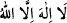

Rasûlullah: “Evet, Hak bundan daha fazlasına da kâdirdir” dedi.
Ebû Cehil’in avucundaki her bir taş parçası
Derhal şehâdet getirmeye başladı.
Taşlardan her biri: “Lâ ilâhe illallah” dedi
“Muhammedü’r-Rasûlullah.” incisini deldi.
Ebû Cehil taşlardan bu sözleri duyunca,
Öfke ile onları yere çarptı.
Allah Teâlâ, dilediği seçkin (havas) kulları hâriç cansız varlıkların hayatını idrâki,
insanların ve cinlerin gözlerinden almıştır. Şâyet hayat sırrı bu âlemin tüm unsurlarında
mevcud olmasaydı, o çakıl taşları tesbih eder miydi?
Bir hadiste “Müezzinin sesini duyan yaş-kuru her şey onun için şâhidlik eder.”[159]
buyrulmuştur. Ancak hayat sâhibi bilgili varlıklar şâhidlik edebilir. Yine ancak bu
özelliklere sâhip varlıklar sevebilir. Nitekim Uhud dağı hakkında Hz. Peygamber
(a.s.)’ın: “Uhud bizi sever, biz onu...”[160] şeklinde bir sözü vârid olmuştur.
Sonra tüm varlıklar, risâletin alâmetleri ve nübüvvetin şâhidleriyle doludur. Allah
Teâlâ cisimlerin ilki ve en büyüğü olan arşı yaratmış ve her şeyden önce kelime-i
tayyibeyi (kelime-i tevhîdi) yazmıştır. Nitekim rivâyet edilir ki:
“Âdem (a.s.) hatâyı işlediğinde şöyle dedi: “Ya Rab! Muhammed hakkı için beni
bağışla.”
Cenab-ı Hak:
–“Muhammed’i nereden biliyorsun?” buyurdu.
Âdem (a.s.):
–“Beni yarattığın ve ruhundan üflediğin zaman başımı kaldırdığımda arşın
sütunları üzerinde: “Lâ ilâhe illallah Muhammedü’r-rasûlullah” yazdığını gördüm.
Sen’in ismine ancak yarattıklarından sana en sevgili olanın adını eklediğini
anladım.” diye cevap verdi.
Cenab-ı Hak:
–“Ey Adem, doğru söyledin. O, senin zürriyetinden gelecek peygamberlerin
sonuncusudur. O olmasaydı seni de yaratmazdım. Arşı su üzerinde yarattığımda
sarsıldı. Ben de üzerine “Lâ ilâhe illallah Muhammedü’r-rasûlullah” yazdım da
sâkinleşti.”[161]
Bir zâtın şöyle anlattığı rivâyet edilir: Bir adada çok büyük yapraklı, güzel kokulu
büyük bir ağaç gördüm. Ağacın üzerinde kırmızı, beyaz ve yeşil olarak gâyet açık bir
şekilde Allah’ın kudretiyle eşsiz bir şekilde yarattığı üç satırlık bir yazı vardı:
Birinci satırda: “
”